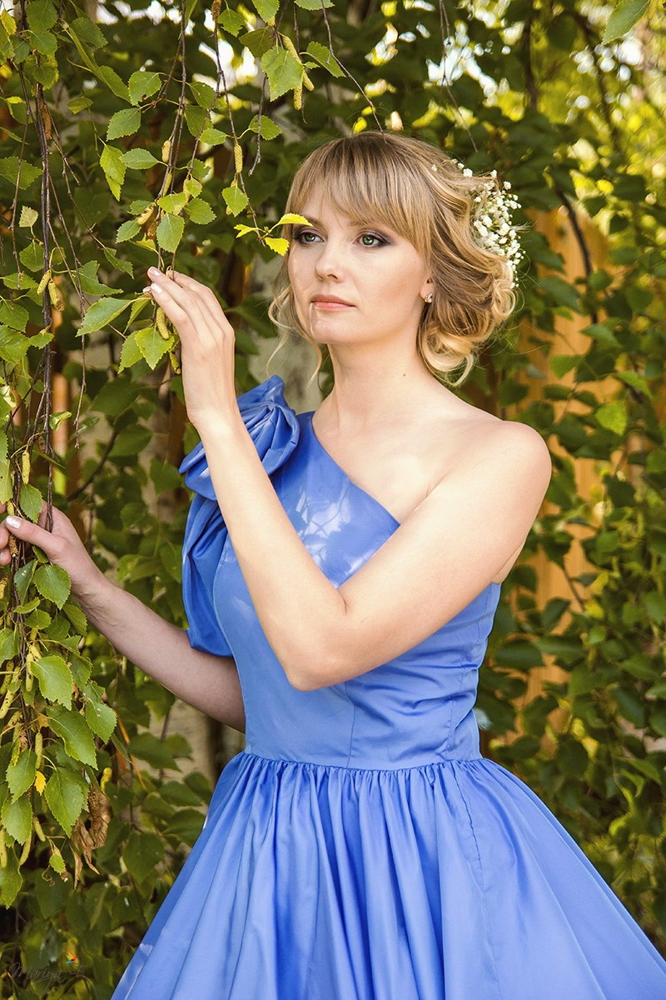

Ученая степень: кандидат экономических наук
| Должность: доцент |
Общий стаж работы – 14 лет |
Стаж работы по специальности - 12 лет |
Образование:
| В 2001 году окончила Пермскую государственную сельскохозяйственную академию им. академика Д.Н.
Прянишникова
по специальности «Экономика и управление сельскохозяйственным производством» |
С 2009 года кандидат экономических наук. |
В 2013 году присвоено ученое звание доцента |
Преподавательская деятельность:
Читает курсы:
Экономический анализ, Планирование деятельности предприятия, Деловые и межкультурные коммуникации,
Инвестиционный менеджмент, Антикризисное управление
Профессиональная переподготовка и повышение квалификации:
| 2020 г. - Современные методы преподавания менеджмента с учетом требований ФГОС», 16 ч. |
2020 г. - Современные методы преподавания финансовых и экономических дисциплин с учетом требований ФГОС», 16
ч. |
2021 г.- Профессиональная переподготовка: Педагогика в образовании, 510 ч. |
2021 г. - Теория и практика подготовки кадров в области защиты и коммерциализации результатов
интеллектуальной деятельности, 230 часов |
Научные исследования
- Исследование регионального потребительского рынка
Публикации
- Агеева О.И. Формирование системы мотивации персонала торгового предприятия // Сфера обращения в системе
воспроизводства Коллективная монография. Пермь, 2019. С. 109-121.
Агеева О.И., Сидоров Н.В. Проблемы регулирования криптовалют и контроля их обращения // Бизнес и общество.
2019. № 4 (24). С. 16.
- Агеева О.И. Игровые методы обучения в формировании навыков инвестирования // Современные инновационные
образовательные технологии в информационном обществе Материалы XII Международной научно-методической
конференции. 2020. С. 95-101.
-
Агеева О.И., Лунева М.Н. Влияние пандемии COVID-19 на развитие предприятий и организаций: проблемы и
перспективы // Вызовы и решения для бизнеса: энергия регионов : сборник материалов II Международного
внешнеэкономического научнопрактического форума. 14 октября 2021 г. – Москва : ФГБОУ ВО «РЭУ им. Г. В.
Плеханова», 2021. С.239-242
Контакты:
Телефон: + 7 (342) 282-57-53 (добавочный 120) каб. 400
Эл. почта:
kafedraeais@mail.ru